Assignment 2: Exploratory Data Analysis
Abhishek Bassan — abhibass@cs.umd.edu
Trisha Mittal — trisha@cs.umd.edu
Dataset
The Chicago Crimes Dataset contains the details of the reported incidents from 2001 onwards in Chicago. Data is extracted from the
Chicago Police Department's CLEAR (Citizen Law Enforcement Analysis and Reporting) system. There are 6,709,800 records in the dataset.
We wanted to explore and discover the underlying patterns in the data, uncover the relations among different attributes of the dataset and
also relate them to real-world scenarios. This would be a good practice of visualisation for us, as we are new to this data, we will go in an iterative loop over making
insights and providing better visualisations.
The data is available online at: Dataset url.
Initial Analysis Questions
- Question1: Is it possible to build an interface, where a resident of Chicago, can analyse his/her current neighbourhood or could use it to analyse the security of the new neighbourhood they are potentially thinking of moving into?
- Question2: Interesting patterns over time about rate of crimes?
- Question3: Can we create a visualisation that the authorities can make use of for allocating resources over different districts? Every district would have their unique set of priorities. Can it help the police authorities in coming up with an efficient methodology to combat crimes in different districts optimally?
Discoveries & Insights
Part 1: Understanding the Data
- We try to look at the different types of crime happening in Chicago.
- Next, we try to look at the location descriptions where these crimes take place.
- The next step is to look at the districts which are most prone to crimes in Chicago.
We were new to the data, so to begin with we tried simple visualisations for getting a sense of the data.
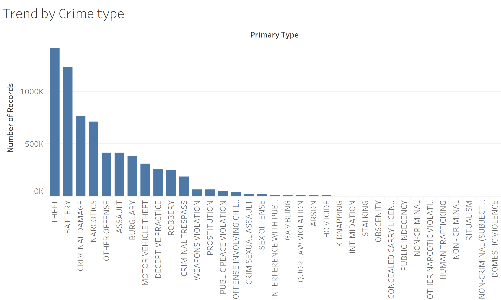
This is a simple bar graph depicting the distribution of all crime types reported since 2001 in Chicago. We see that 'Theft' and 'Battery' are the most common type of crimes. But also we find unusually low number(1) for 'Domestic Violence'.This number is very low. It is possible, that they are reclassified in some other category or are not reported in this data and this just a anomaly.
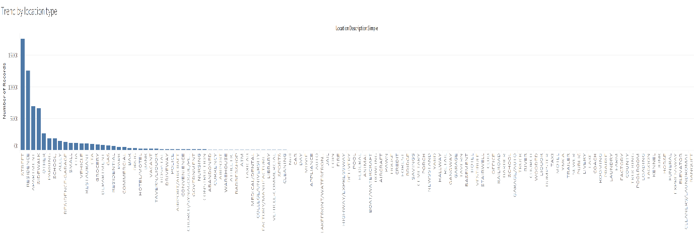
We see that most of the crimes happen in 15-20 locations. To get a more insightful visualisation, we only look at the top 20 location-descriptions.
Crime-location-description distribution of crimes in Chicago.
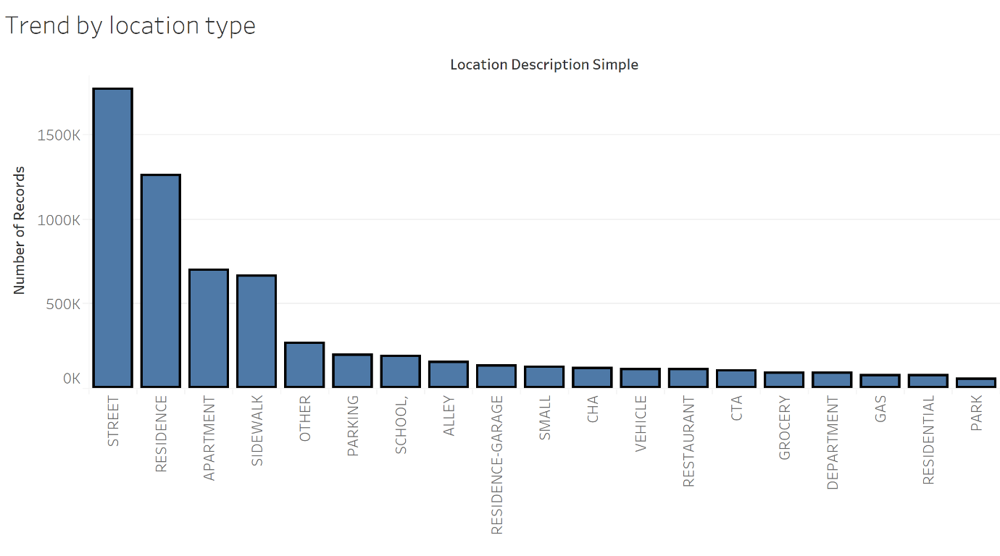
We can see that as expected streets are most crime-prone location. We can also observe that apartments are generaly safer than residences.
Crime-location-description (top 20 locations) distribution of crimes in Chicago.
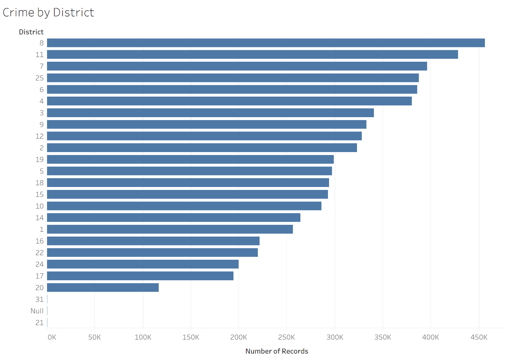
From the above bar graph, it seems that district 8 is least safe. But, it needs to be normalised with the population of the district to get the correct estimate of the crime rate.
Also, the district 31 and 21 have unusually low crime numbers. This might be because they have very low population or this data doesn't contain the complete data for these districts.
Districts prone to more crimes in Chicago.
Part 2: Temporal Analysis of Crimes
- The next thing to explore was the time of the day most prone to crimes. Here, we use a heat-map representing the number of crimes reported at that time of the hour, over the years.
- Here, we visualise the same thing, but distributed over different crime types.
- But we can select the particular crime type. That would give a more comprehensive picture.
- Another similar analysis was to see, what kind of locations are safe at what time of the day.
- We can also visualise how number of crimes change over months.
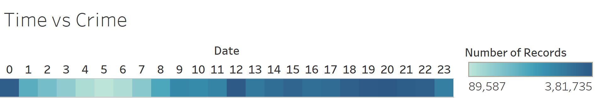
We can observe that most of the crimes happen between 2 PM and 1 AM. But we observe that there is unusual increase increase in crime around 12 noon. This data can help police by allocating more people or bieng more prepared during these hours.
Crime-time analysis for all crimes
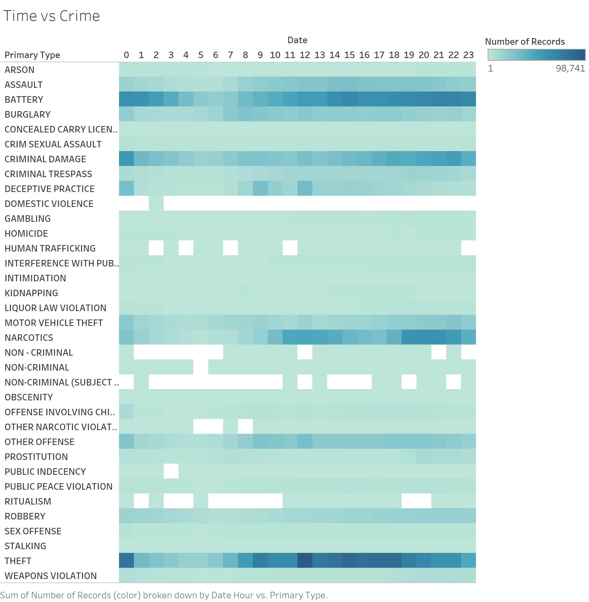
Crime-time analysis for all crime types
Because there is very big skew towards top 5 crimes the differentiation in color in the crimes with low crime number is very difficult. For example, from this visualisation it looks like 'Gambling' has uniform distribution.
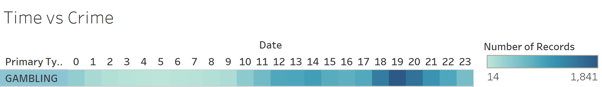
Crime-time analysis for all incidents of 'Gambling'
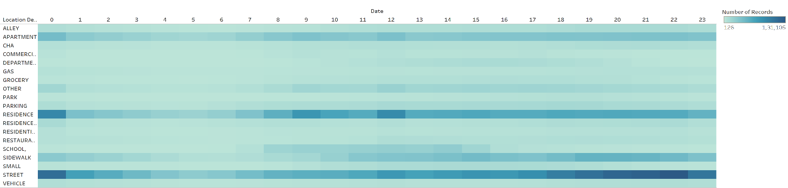
Crime-time analysis for location types
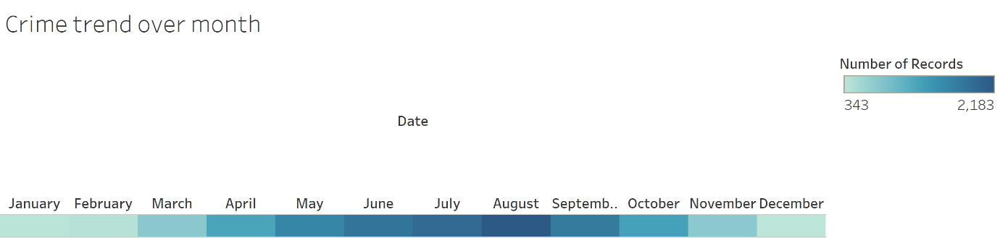
Crime trend over month
We can observe that crime number drops between the months of November and February. This may be because of harsh weather conditions during winter. This time could be utilised is doing non field-work like additional training for officers.Non critical administartive work can be scheduled during this time so officers have more time during busy months.
Part 3: Crime trend analysis for Different Districts
- We want to see if the type and number of crimes are different for different districts. Tableau with its ease of linking two visualisations, makes it easy for us to view this trend for any individual district that we select. Here, is a screenshot of the dashboard.
- To further reinforce the point, we look at the crime-trends in the two most unsafe districts, District 8 and 11.
While 'Theft' seems to be the major crime in District 8, District 11 has severe amount of cases of 'Narcotics'. This tells us that different districts have different crime distribution and need to have different resource allocation.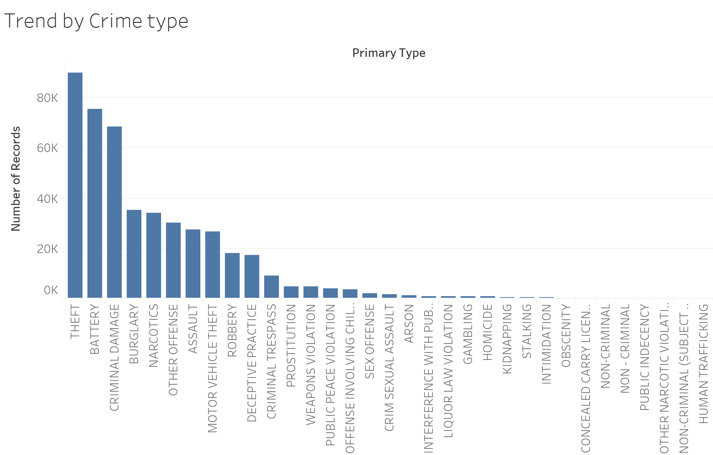
Crime trend Analysis for District 8 (most unsafe District). 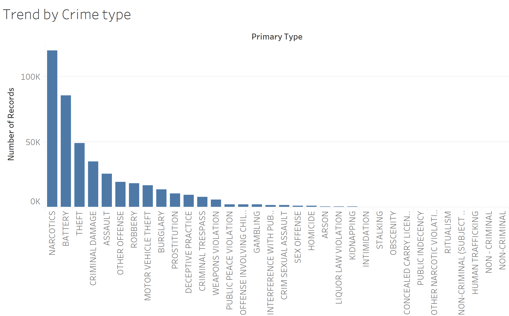Crime trend Analysis for District 11 (second-most unsafe District).
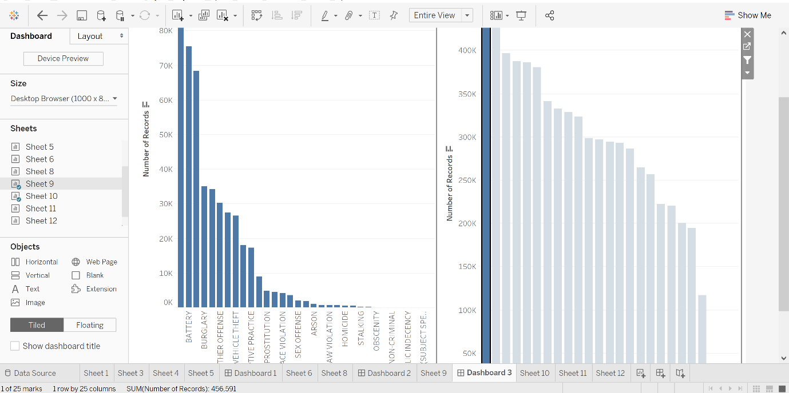
Crime trend Analysis for an individual district.
Part 4: Crime Location Analysis
- The next we look into is what location types, do most crimes take place in. We use this tree-map visualisation.
- This visualisation looks very convoluted, so using the dashboard, we choose only the top-few locations and get a better visualisations for this.
- We plot each type of crime on the map with each dot's size corresponding to number of records (crimes) reported in that block.
- For other crimes we have to apply filters for individual crime type to get its distribution. Almost all have uniform distribution but some like gambling are concentrated is some location.
- We can identify unsafe nieghbourhoods by selecting the blocks which have highest number of reported crimes. This will give us idea about the neighbourhoods to avoid when relocating in chicago.
- We first plot the number of crimes, reported every month and year.
- We now analyse this trend along with the number of arrests made in the reported incidents for every crime type.
- As some crime have very low frequency this is little difficult to analyse. Using dashboard to select only top crime by number of records. This helps us get a better visualisationsfor the previous task.
- We can also have an approximate idea about rate of improvement in each crime by plotting the trend line and noting its slope. It gives an approximate idea. For this, we removed data from 2018 as it might have incomplete data, and can cause an anomaly. Maybe better model is exponential as crime in long time is supposed to saturate to zero. So we plot for exponential trend line also.
- Question1: Is it possible to build an interface, where a resident of Chicago, can analyse his/her current neighbourhood or could use it to analyse the security of
the new neighbourhood they are potentially thinking of moving into?
a) We saw that some districts are more crime prone than others and can be avoided
b) We also identified the dangerous neighbourhoods using the data for blocks.
Using this information users can take informed decision about choosing thier neighbourhood
- Question2: Interesting patterns over time about rate of crimes? We observed following interesting patterns:
- Question3: Can we create a visualisation that the authorities can make use of for allocating resources over different districts? Every district would have their unique set of priorities. Can it help the police authorities in coming up with an efficient methodology to combat crimes in different districts optimally? a) We saw that different districts have different dominant crime
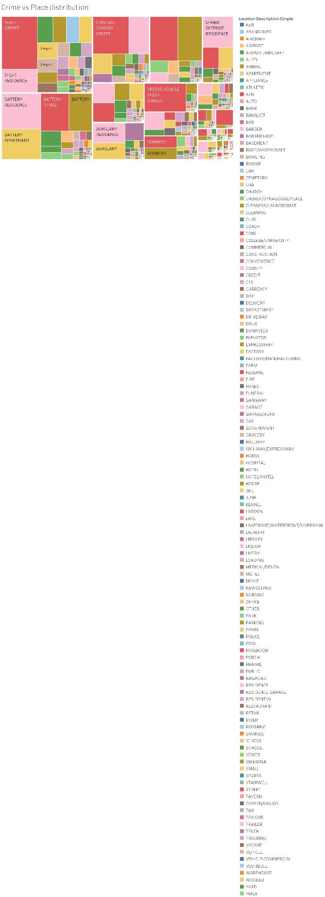
Crime Location Analysis
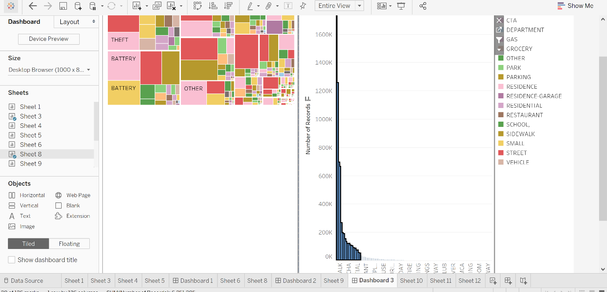
Screenshot of Dashboard
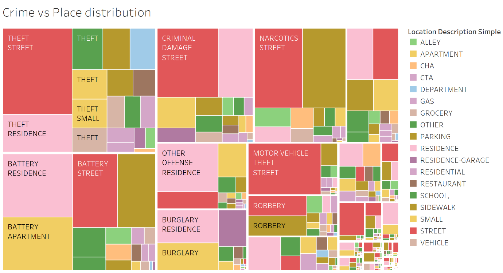
Here, every tile represents a crime. And, within every crime, we see the distribution of the locations that crime has been reported in. The size of the each tile also
tells us how common the crimes are, making the visualisation even more informative.
Crime Location Analysis (for top few locations)
Here, every tile represents a crime. And, within every crime, we see the distribution of the locations that crime has been reported in. The size of the each tile also
tells us how common the crimes are, making the visualisation even more informative.
Part 5: Geographical Analysis
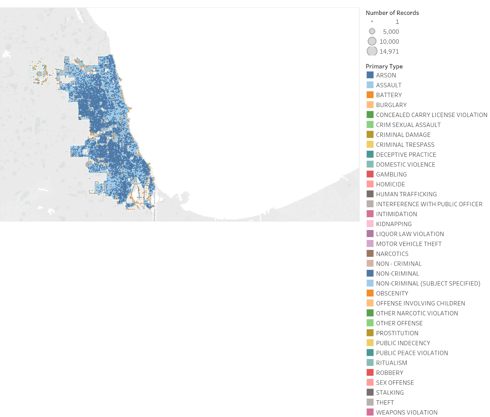
There seems to be occlusion by the crimes that appear top in the list ('Arson' and 'Assault'). The 'Assault' incidents seem to be uniformly distributed
but 'Arson' incidents seem to be away from coast.
Geographical View of Crimes
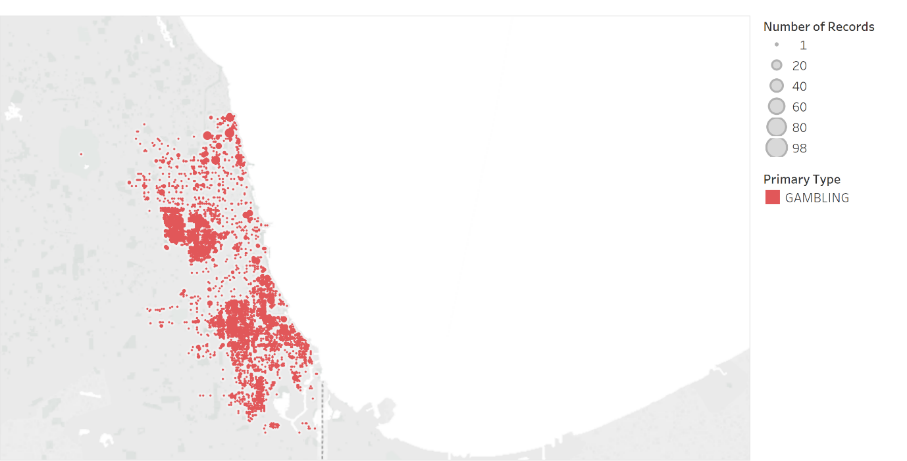
Geographical View of 'Gambling' Crime
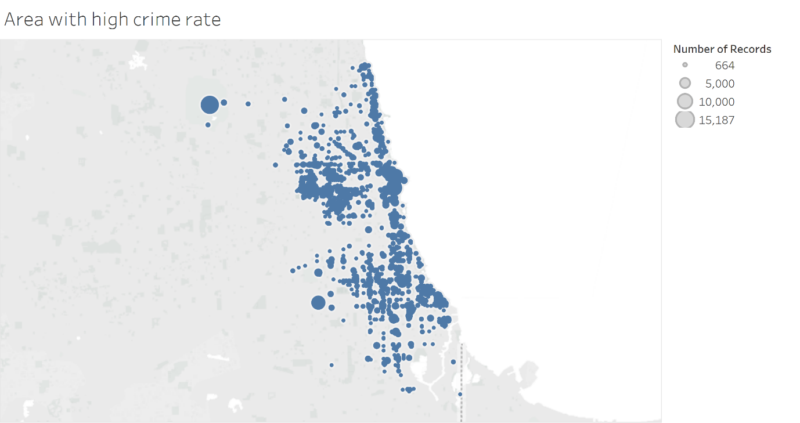
Areas with high crime rates
Part 6: Overall Crime Stats and Police Arrest Analysis
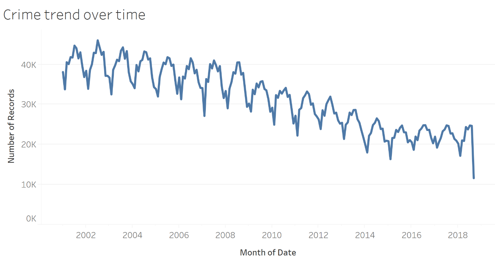
Some interesting observations here are that the overall crimes are going down. Also, as expected, there is a dip in the number of crimes towards the beginning and end of every year.
Also we see a sudden drop in end. This is because the data for month of September is incomplete.
Overall crime Statistics over the years
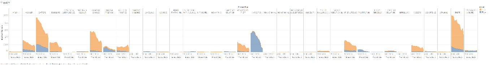
Arrests Made in Reported Crimes per crime type over the years
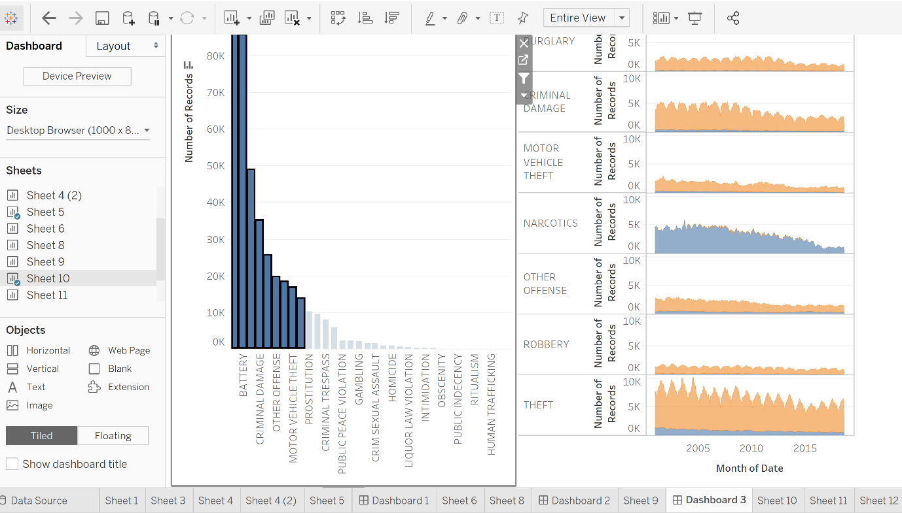
Screenshot of the Dashboard
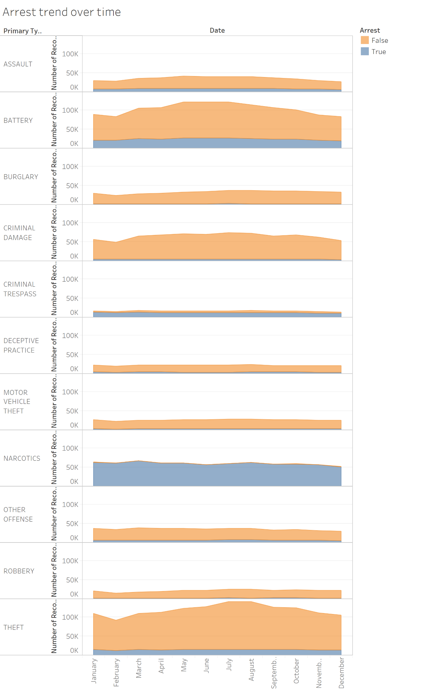
We see that offense like narcotics very high rate of arrest where as burgalary have less success rate.
Arrests Made in Reported Crimes per crime type over the years (for top crime types)
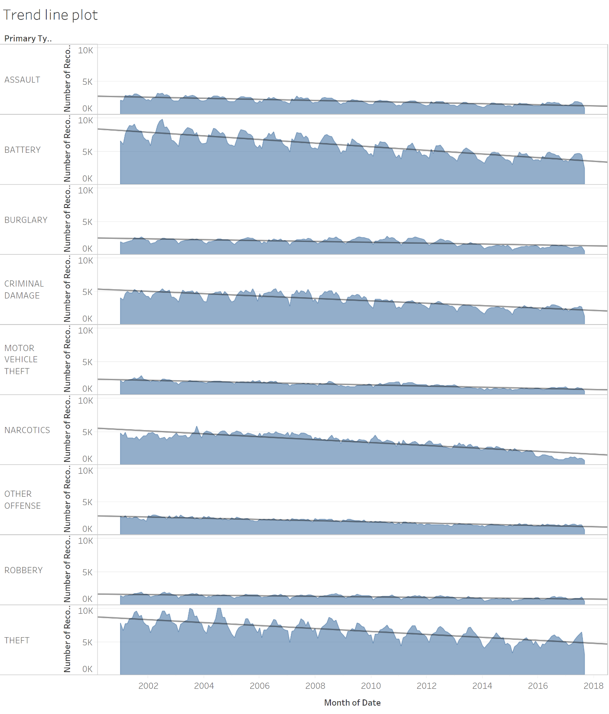
Crime Statistics over years with a trendline.
Crime Statistics over years with a exponential trendline.
Summary
We re-visit the Initial Analysis Questions that we asked and provide visualisationsfor them.
a) The crime rate goes down during winter.
b) We identified the time during the day which are more unsafe.
c) We also identified which places are unsafe at what time
b) We also found out the time of day and the months which have higher crime rate.
The above data can be used for appropriate allocation of resources.
Evaluation of Tool
Strengths
STRENGTH 1: The process of generating visualisations was very simple as Tableau is UI-centric and not script-centric. The process is fast with good response times. Switching between different types of encodings is very quick and hence enables one to settle on the one which could give the most insight into the data.
STRENGTH 2: Splitting of attributes is extremely easy. Moreover, Tableau can understand attribute-types like Date. For instance, we had a attribute named Date, which contained date in the format mm/dd/yyyy along with the timestamp in the format hh:mm:ss AM/PM. While doing the visualisations, with a simple drop-down menu, we were able to choose if we wanted to plot the date, in year, month, date or day format.
STRENGTH 3: Combining two views with the help of dashboard made the process of exploration and deriving conclusions even easier. For instance, it was easier to make comparisons about crime trends in different districts. We have added screenshots for this in the previous section, wherever we exploited this feature of Tableau.
Weaknesses
WEAKNESS 1: Whatever plethora of features that Tableau provides us with are extremely good and make the visualisation process fun. But, if one wants to try and experiment something out of this, one can face limitations. For instance, to try and make line graph, it is mandatory that one of the fields has to be Date. That's in a way a limitation.
WEAKNESS 2: While experimenting with a different dataset, we realised that though Tableau supports datasets in .json format, joining two tables directly in .json is not permitted. Though there is a work around it using blending. This shows that not all features are present for all type of data sources
WEAKNESS 3: Tableau Desktop is currently available only for Mac and Windows, and not for Linux. Moreover, not being an open-source software the documentation and the Tableau user community is limited.
Evaluation Summary and Discussion
The assignment helped us get comfortable at creating visualisations using the Tableau software. We were able to reason about what is a good visualisation and what's a not-so-good visualisation. Starting with a dataset, which was new we were able to go over an iterative loop and come up with patterns and answers through the visualisations we created. By the end-of-it we were very familiar with our dataset and also had some good insights, and were also able to create visualisations that could be useful for groups of people. We were able to use 6 unique types of visualisation techniques (Area graph, Bar graph, Line graph, Tree Map, Maps, Heat Map).